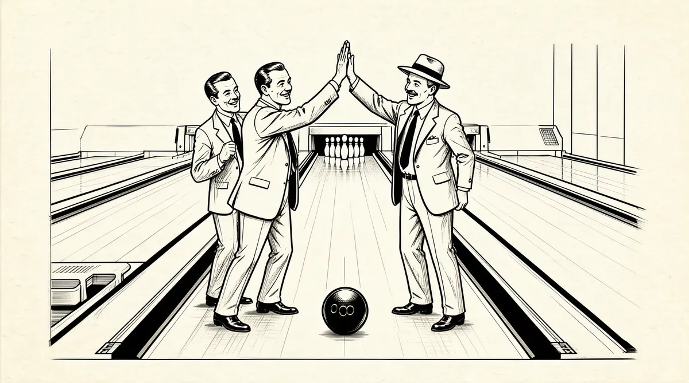

第20章 格雷厄姆–纽曼公司

婚礼后几个月，苏珊和她的父母以及公婆去芝加哥参加于1952年7月召开的共和党大会。汤普森一家和巴菲特一家去往芝加哥，不像是会议代表，倒像是一支部队的一部分。至少从政治意义上讲，现在他们是一个联合起来的家庭。在这个选举年里，他们将会为共和党夺回白宫而冲锋陷阵，此前他们已经历了长达20年的民主党执政的折磨。1多丽丝将和她的父亲一起在幕后工作，而更年轻的伯蒂和苏珊对这些场面比较无知，她们更多时候呆呆地看着那些为共和党露面的社会知名人士，如约翰·韦恩。2
当然，沃伦还是留在奥马哈埋头苦干。政治让他着迷，可还不如金钱的诱惑。他依然憎恨像“开药方”一样的工作，一边苦干一边找出路。他年老的老师戴维·多德想帮他，推荐他到一家叫价值线投资调查的投资顾问公司兼研究报告发行商那儿工作，他们正在寻找新人。这份工作的报酬丰厚，“一年至少7000美元”。3可是，沃伦并不打算成为一个籍籍无名的研究人员。于是他继续向那些不感兴趣的客户推销GEICO股票，同时阅读报纸上以1英寸高的字体印刷的有关总统候选人大会的新闻头条。历史上第一次，人们可以在电视上看到大会的相关内容。沃伦如饥似渴地看着，被这样一种可以放大以及影响事件的媒体力量所震撼。
竞选总统候选人一路领先的是俄亥俄州的参议员罗伯特·塔夫脱4，以“正直先生”之名为人所知。塔夫脱是共和党中少数派的领袖，被中西部孤立主义者所包围，主张政府不要干涉个人事务，最重要的是要比杜鲁门更加积极地追求共产主义。5塔夫脱让他的朋友霍华德·巴菲特担任其内布拉斯加总统竞选班子的负责人，还负责他的演讲团。霍华德非常鄙视的一个叫东部自由机构6的组织为了反对塔夫脱，请来了已经退休的艾森豪威尔将军，他在第二次世界大战中担任欧洲盟军的最高指挥官以及北约的第一任最高指挥官，是个温和派。艾森豪威尔是个在政治上非常灵活敏捷的外交家，有着出色的领导技能，被许多人视为战争英雄，很受欢迎。随着共和党大会的临近，艾森豪威尔开始在民意调查中赶上来了。
芝加哥发生的一系列事件证实了这是历史上最有争议的共和党总统候选人提名大会。艾森豪威尔的支持者们努力促成了对选举大会规则的修订，而且通过了一次富有争议的投票，直接推动艾森豪威尔在第一轮投票中就赢得了候选人提名。出离愤怒的塔夫脱的支持者们感觉受到了掠夺，但是不久艾森豪威尔和他们讲和，承诺将和“缓慢爬行的社会主义”战斗，同时塔夫脱坚持让他的支持者们克制愤怒，并且为了共和党能重回白宫而给艾森豪威尔投票。共和党人在艾森豪威尔和他的竞选搭档理查德·尼克松身后团结起来了，“我喜欢艾森豪威尔”的标语随处可见。7当然，支持这一切的不包括霍华德·巴菲特，他因为拒绝支持艾森豪威尔而和共和党决裂。8
这是自毁政治前途的做法，共和党内对他的支持一夜之间完全蒸发了，他和他的原则被孤立了。沃伦认识到他的父亲已经深陷困境，9从孩提时代起，沃伦就努力避免违反承诺、过河拆桥以及冲突。现在霍华德的斗争将这三个原则更加深刻地烙在他儿子的心里：联盟是必要的；承诺应该谨慎，因为它天生神圣；哗众取宠的表演几乎都以失败告终。
11月大选中，艾森豪威尔击败了阿德莱·史蒂文森。次年1月，沃伦的父母回到华盛顿，以完成剩下的任期。沃伦已经认识到霍华德和利拉强迫症的性格在很多方面使他们自己处于不利地位，他开始吸收他岳父家的某些风格。多萝西·汤普森很好相处，她的丈夫虽然独断专行，但和严苛的、理想主义的霍华德·巴菲特相比，他更加人性化，更善于处理人际关系。沃伦和苏珊以及她的家人共处的时间越久，他就越受他们的影响。
“沃伦，”汤普森博士带着耶稣训众式的威严传达自己的意见，“要一直让女人围着你转，她们会更加忠诚而且会更努力地劳作。”10其实他的女婿几乎不需要被告知这个道理。事实上，只要她们不企图总是驱使他，沃伦总是渴望被女人照顾。苏珊能够看出他非常需要她扮演一个母亲的角色，于是她总是围绕在丈夫周围，努力“修理”他，似乎他是一堆残骸、一团糟。“哦，天啊，”她说，“他确实是个问题。”11她回忆，他们会面的时候，“我从没见过有人这么痛苦”。
沃伦也许没有意识到自己的痛苦如此之深广但是他这样描述苏珊在自己生活中扮演的充满力量的角色。
苏珊像我的父亲一样对我影响很大，甚至大过我父亲的影响，用不同的方式。我身上有很多自我保护的东西，她能解释，而我却不能。她也许看到了我身上别人看不到的一些东西。她知道需要时间和肥料，它们才能萌发出来。她让我感觉自己身边有一个拎着小喷水壶的人，而这个人将保证花儿的成长。
苏珊认识到沃伦的脆弱，认识到他多么需要有人安抚、慰藉，消除他的疑虑。她越来越多地看出他的母亲对子女们造成的影响。多丽丝受到的伤害更严重，利拉已经让沃伦和多丽丝都深深确信自己毫无价值。除了生意，苏珊发现她的丈夫在生活中的各个方面都对自己充满怀疑。他从未感觉被爱，她也看出来他觉得自己并不可爱。12
我疯狂地需要她，我工作起来很高兴，可是我对我自己不高兴。她的确拯救了我的生活，她让我重获新生，13这是和从父母那儿得到的一样的、无条件的爱。
沃伦想从他的妻子那儿得到通常从父母那儿获得的东西。此外，他是在一个为他安排好所有事情的母亲身边长大的，现在苏珊接管过来了。虽然他们婚后生活的基本模式是那个时代比较典型的——他挣钱，而她照顾他，并且负责所有内部事务，可他们的安排比较极端。巴菲特家的一切都围绕着沃伦和他的生意转，苏珊理解她的丈夫是一个特别的人，她愿意配合他那处于胚胎期的野心生活。他白天工作，晚上查阅《穆迪手册》。他也会为自己安排一些打高尔夫和乒乓球的休闲时间，甚至申请成为奥马哈乡村俱乐部的初级会员。
苏珊刚刚20岁，无论怎样也算不上会做饭，不过她就和其他20世纪50年代的妻子一样，开始做最基本的膳食和家务。那时，奥马哈的妇女都想在当地的KTMV电视台的节目《典型家庭主妇》中露脸。而她完全忙于满足丈夫的少数但很特别的需求：冰箱里的百事可乐，台灯里的灯泡，以奇怪的方法烹制的当作晚餐的肉和土豆、装满盐的盐瓶、碗橱里的爆米花、冷冻柜里的冰激凌。他有时也需要有人帮着穿衣服，协助和人打交道，温存一下，摸摸头以及拥抱。她甚至替他理发，因为他声称自己不敢去理发师那儿。14
沃伦为苏珊着迷，而苏珊能够感受到他心里所想的事情。他把她形容成一个给予者，而自己是个接受者。“她吸收我的东西、体会我的感受要比我体会她的感受多得多。”人们总是看到他们在亲吻拥抱，苏珊经常坐在沃伦的腿上，她时常说这让她想起了自己的父亲。
婚后6个月，苏珊怀孕了，不得不从奥马哈大学退学，她的姐姐多蒂也怀上了第二胎，她和苏珊一直特别亲近。多蒂是个黑发美人，和她父亲一样聪明，根据家里人的说法，她上中心高中的时候，智商是全校最高的。但是从长相和家庭生活来看，她更像她的母亲。15她嫁给了霍默·罗杰斯，他是一个飞行员和战斗英雄，有着男中音的大嗓门。虽然他对自己的战争功绩非常谦虚，可人们都叫他“吹牛罗杰斯”。霍默是一个快乐的精力旺盛的牧场主，他们家里经常高朋满座，多蒂弹钢琴，霍默唱歌。苏珊和沃伦没有参加罗杰斯夫妇活跃的社交生活，因为他们比较严肃而且不喝酒。但是两姐妹经常在一起，多蒂总是难以作决定，而且自从她有了第一个儿子比利以来，似乎对当母亲还比较茫然。自然地，苏珊就过来照顾和帮助她。
苏珊和她的大姑子多丽丝也开始亲近了。多丽丝在奥马哈当老师，她的丈夫杜鲁门·伍德长相英俊，性格很好，来自奥马哈一个显要的家族。但是多丽丝开始疑惑她是否像一匹奔跑的小雌马突然被拉停在一匹拖车马旁边。行动快捷的多丽丝告诉杜鲁门要加速，于是他真的跑得快了点儿，不过不是快很多。
苏珊对沃伦以及他姐姐的保护在1953年1月以后提高了一个等级。那时艾森豪威尔已经宣誓就职，而霍华德在国会的任期也结束了，他和利拉返回了内布拉斯加。多丽丝和沃伦感受到了利拉重回这个城市的紧张。沃伦几乎不能忍受和他的母亲同处一室，而他母亲仍然会不时攻击多丽丝。
霍华德回到奥马哈以后无事可做。于是沃伦成立了巴菲特–巴菲特公司，这样他们可以偶尔一起买卖股票。霍华德出了一些资金，而沃伦象征性地出了些钱，他主要是贡献思想和劳动。然而霍华德很沮丧地看待自己第三次重回股票经纪的老本行。虽然他在国会的这段时间，沃伦一直在帮他照看以前的账户，不过霍华德知道儿子很憎恨它，而且沃伦也一直没有停止努力让本杰明·格雷厄姆雇用自己，如果有机会去纽约，他会立刻离开这儿。而霍华德想念他的真爱——政治。他藏匿了想进入参议院的理想，尤其是现在还有一个共和党人在白宫，然而他的野心和他极端的政治主张相互冲突。
1953年7月30日，苏珊和沃伦的第一个孩子——苏珊·艾丽斯·巴菲特出生了。他们叫她苏茜。苏珊变成了一个热情、顽皮又很投入的母亲。
苏茜是霍华德和利拉的第一个孙女。一周以后，苏珊的姐姐多蒂的第二个儿子汤米也出生了。没几个月，多丽丝也怀上了她的第一个孩子——女儿罗宾·伍德。1954年春天，苏珊又怀上了第二胎。现在，汤普森一家和巴菲特一家有了新的焦点——孙子辈们。
几个月以后，霍华德的机会似乎来了。1954年7月1日的早晨，华盛顿传来消息，内布拉斯加的资深参议员休·巴特勒因中风被紧急送往医院，生还的可能性不大。申请进入预选以填补参议员席位空缺的最后期限迫在眉睫，可是霍华德出于礼仪而拒绝在巴特勒过世之前递交申请文件，巴菲特一家整日都焦急地等待巴特勒的消息。他们知道霍华德在道格拉斯县有很高的知名度，如果他能参加不需要通过党内提名程序的特别选举，即使党内的权贵不再对他感兴趣，他胜出的概率也还是很大的。
巴特勒的死讯在傍晚传来，而弗兰克·马什的办公室如往常一样在下午5点关门。霍华德将他的候选文件扔进车里，带着利拉驱车前往林肯。因为截止时间是午夜12点，所以他们认为还有足够的时间。他们本想去马什的家里递交申请文件，可即使霍华德已经在白天早些时候支付了申请费用，马什还是拒绝了他们。夫妇俩很愤怒地返回了奥马哈。
那时共和党的州候选人提名大会正在召开。巴特勒的死讯传来，就需要选出一个临时的继任者来完成他的任期16，而这个人很可能在11月被选上继续干巴特勒的工作。从共和党人在这个州的排名来看，霍华德是一个明显的选择。可是他已经被看作一个狂热者，是对无关紧要的道德上的小事也不屈服的人，而且不是一个忠于自己党派的人，因为他没有支持艾森豪威尔。于是大会选了罗曼·赫鲁斯卡，在霍华德任期结束时，罗曼接替了他在国会的位置。霍华德和利拉飞速返回林肯，迅速向州立最高法院提出诉讼，要求党内接受他的提名。可是24小时以后，他们放弃了这无济于事的战斗，撤回了诉讼。
沃伦听到有关提名的消息后也被激怒了，共和党怎么敢用这种方式来回报霍华德几十年来的忠诚呢？
51岁的霍华德已经看到他的未来正在消失。随着愤怒逐渐消退，他的沮丧与日俱增。像他这样引退的资深政客早就应该去扮演一个新的角色，他已经被曾经是他生活中心的舞台所抛弃，那个舞台曾让他感觉在这个世界上自己还是一个有用的人。他曾经想在奥马哈大学争取一个教书的职位，家里人也觉得凭他的从商经历和国会议员的任期，这是很合理的。尽管自己的儿子也在那儿教书，而且汤普森博士又是文理学院的院长，但学校考虑到霍华德在当地的一些古怪行为，并没有聘用他。他只能回巴菲特–福克公司工作。最终，他在离奥马哈30英里的米兰德·路瑟兰学院找到了一份兼职的教书工作。17
利拉似乎要被这些悲惨的事情击倒了，因为曾经给她带来荣耀的霍华德的地位，对她似乎比对霍华德自己意味着更多。她的姐姐伊迪丝现在住在巴西，伯蒂住在芝加哥，而她和多丽丝以及沃伦的关系并不稳定，她只能依靠21岁的苏珊。可是，苏珊又是一个忙碌的、怀孕的年轻妈妈，还要不停歇地照顾沃伦。
不久，苏珊就要永远离开奥马哈了。两年间，沃伦一直和本杰明·格雷厄姆保持通信来往。他提出对股票的看法，比如他和他的父亲为两人的合伙公司购买的格瑞夫兄弟桶业的股票。他还定期去纽约走访格雷厄姆–纽曼公司。
“我总是设法去见格雷厄姆先生。”
当然，像他这样执着于格雷厄姆–纽曼公司的学生并不多见。
“是的，我很坚持。”
在当地的共和党当着他父亲的面将参议员提名的大门砰然关上的时候，沃伦已经走在返回纽约的路上。“本杰明写信给我说，‘快点儿回来吧。’他的合伙人杰里·纽曼如此解释，‘你知道，我们又考验了你一下。’我感觉自己撞大运了。”毫无疑问他愿意接受这个工作，而这一次，国民警卫队同意了。
被格雷厄姆–纽曼公司聘用，沃伦激动万分。1954年8月1日，他抵达纽约，第二天就出现在新的工作岗位上，比正式的开始日期提前了一个月。在那儿，他发现一周以前，一个悲剧刚发生在本杰明·格雷厄姆身上。这时离沃伦24岁生日还差4个星期，他写信告诉父亲：“本杰明·格雷厄姆的儿子牛顿上周在法国他所在的部队里自杀了，他一直有点儿心理不平衡。格雷厄姆是在《纽约时报》上看到军队发布的消息才知道儿子已经死于自杀，这真是一件让人难以接受的事情。”18格雷厄姆赶往法国收拾儿子的遗物，并且和牛顿的女朋友玛丽·路易丝·安明古斯会面。玛丽比牛顿大几岁。几个星期以后本杰明从法国回来，但是和以前已经不太一样了。他开始和玛丽通信，并且定期去法国。但是在那段日子里，沃伦对自己偶像的个人生活一无所知。
沃伦不得不开始照料自己的生活，首先要找到他们一家能够生活的地方。在纽约的第一个月，苏珊和女儿苏茜继续留在奥马哈。
我首先想方设法住在彼得库柏村，这是“二战”结束后由大都会人寿公司建造的两个大型工程之一。我在哥伦比亚大学的朋友弗雷德·库尔肯住在彼得库柏村，沃尔特·施洛斯也住在那儿。每个人都想住进去，由于一些法律上的特别条款，那儿真的很理想，一个月七八十美元，条件非常好。我去之前申请了，可在两年之后才收到上面写有“你被接受了”的字样的明信片。如果我能早一点儿被接受，我早就已经生活在这座城市里了。
于是，沃伦到处寻找便宜的公寓，不考虑客观位置以及路途漫长。最后他定了一套有三间卧室的公寓。那一栋白色砖瓦建筑，坐落在中产阶级居住的怀特普莱恩斯郊区，属于离纽约大约30英里的威彻斯特县。几个星期以后苏珊和苏茜到达时，公寓还没有准备好。全家不得不先住进威彻斯特县一幢房子的其中一间，那儿非常狭小，他们不得不临时把梳妆台的抽屉为女儿当小床用。巴菲特一家在那儿只住了一两天。
但是这些日后被用来说明沃伦的节俭习惯的故事被添油加醋，变成沃伦太掉价了，竟然不愿意为苏茜买小床，而让她在怀特普莱恩斯度过的大部分婴儿期里睡抽屉。19
怀孕的苏珊卸下行李安排新家，同时照顾他们的孩子、熟悉邻居。而另一边，沃伦每天早上起来，搭火车去纽约中央车站。第一个月里，他一直待在格雷厄姆–纽曼公司的文件室里，迫切地想知道有关这个公司运作的所有事情，不放过每一张纸片。
只有8个人在那儿工作：本杰明·格雷厄姆、杰里·纽曼、杰里的儿子米基·纽曼、会计伯尼·华纳、沃尔特·施洛斯、两个女秘书以及刚来的沃伦。沃伦终于穿上了他一直垂涎的实验室风格的灰色薄外套。“他们给了我那件外套，那真是一个重要的时刻。在我们的外套下，我们都是平等的。”
当然，这些人并不是完全平等的。沃伦和沃尔特坐在一间没有窗户的房间里，里面放着自动收报机、打给经纪人的直线电话，以及一些参考书和文件。沃尔特就坐在电话旁边，并且大多数时候都是他打电话给经纪人。本杰明、米基·纽曼，通常是杰里·纽曼，会定期从他们的私人办公室过来确认一下自动收报机上的报价。“我们会查找数据，并且阅读《标准普尔手册》以及《穆迪手册》，发现那些以低于营运资本的价格出售的公司，那时有很多这样的公司。”施洛斯回忆。
这些公司就是格雷厄姆所称的“烟蒂”：便宜又不受宠的股票，就像人行道上可以找到的那种细长雪茄烟被碾碎的烟蒂一样，被弃置一边。格雷厄姆擅长找到这些其他人会忽略的令人不屑的残留物，他能点燃它们，然后再满满地吸上最后一口。
格雷厄姆知道相当数量的“烟蒂”将会是肮脏的，并且认为花时间检验每一个“烟蒂”的质量是白费力气。平均率法则认为它们中的大多数还能吸上一口，而他总是根据公司清算时的价值考虑——如果被清算，那它们的资产能值多少，以怎样的折扣购买才符合“安全边际”。作为更进一步的安全措施，他会在大量股票中只买很少的头寸，这是出于分散投资的原则。格雷厄姆的分散投资理念非常极端，有时候他的头寸小到只有1000美元。
对自己的判断非常有信心的沃伦却认为没有理由以这种方式下注，并且对分散投资不以为然。他和沃尔特从《穆迪手册》收集数据，并且填写成百上千张格雷厄姆–纽曼公司用于作决定的简单表格。沃伦想要知道每一家公司的所有基本信息，一旦看完这些信息，他就会缩小范围，更认真地研究少数股票，然后将钱集中投注在他认为最好的股票上。他愿意将他的大多数鸡蛋放进一个篮子里，和购买GEICO股票的做法一样，虽然那时他已经出售了GEICO股票，因为他总是没有足够的钱去投资。每一个决定都有机会成本——他必须将每一个投资机会和下一个更好的投资机会作比较。虽然他非常喜欢GEICO股票，但当他找到了他更希望得到的另一只股票时，他不得不做出壮士断腕般的决定。这只股票是西部保险，每股收益29美元，可才卖3美元一股。
这就像找到了一台老虎机，每次你玩儿的时候都会有惊喜出来。如果你放进25美分，一拉手柄，“西部保险机器”会保证至少支付两美元20，任何头脑健全的人都会一直玩下去。这是沃伦迄今为止看到的安全边际最大且最便宜的股票，他尽其所能地买这只股票，而且让他的朋友们也买了。21
沃伦像一条可以找到任何免费或便宜东西的侦探犬。他有吸收数字且加以分析的惊人能力，很快就成为格雷厄姆–纽曼公司的得力干将。对他而言这是自然而然的事，格雷厄姆的“烟蒂”和沃伦在赛马场弯腰捡别人丢弃的赢钱的彩票的旧嗜好非常相似。
他密切关注合伙人（本杰明、杰里和米基）在干些什么，本杰明·格雷厄姆是费城里丁煤铁公司的董事会成员，而格雷厄姆–纽曼控制了这家公司。沃伦自己已经发现了这只股票，截至1954年年底共投入了35000美元。他的老板也许会有点儿胆战心惊，可沃伦自己很有信心。22这家公司销售无烟煤并且拥有被认为有价值的废渣堆，事实上是一项不太值钱的生意。随着时间流逝，它必然会衰退。但是，它可以用多余的现金去购买别的公司。
我只是坐在外面办公室的苦力。一个叫杰克·戈德法布的家伙来到格雷厄姆–纽曼，他和他们谈判，而他们从杰克那儿为这家煤铁公司买下了联合内衣公司，这就缔造了后来的P&R公司。23这是这家公司多样化转型的开端。我不属于内部圈子，不过我非常感兴趣，知道一些事情正在发生。
沃伦竖着耳朵偷听的是资产配置的艺术——把钱放在能获得最高回报的地方。在这个案例中，格雷厄姆–纽曼使用从一项生意中得来的钱去购买利润更丰厚的另外一项生意。久而久之，这也意味着破产和成功之间可以转化。
这样的交易发生的时候，沃伦觉得自己好像正坐在窗台上，朝里看高明的筹资。不过，就像他不久后发现的，格雷厄姆和华尔街其他人的做法并不一样。他总是在心里朗读诗句或者引述维吉尔的话，所以很容易在地铁里丢东西，和沃伦一样，他对他的外表漠不关心。如果有人说“这真是一双有趣的鞋子”，格雷厄姆才会低下头看看一只脚上咖啡色的牛津鞋，另一只脚上却是黑色的，然后眼睛都不眨地回答，“是的，事实上，我家里还有一双跟它们一样的鞋”。24但是，和沃伦不一样的是，他并不关注钱本身，也不是将交易看成是比赛而感兴趣。对于他而言，挑选股票就是一个智力测验。
一次，我们正在等电梯。我们准备到位于查宁大楼底层的自助餐厅吃饭。本杰明对我说：“记住一件事，沃伦，钱并不会让我和你的生活有太多不同，我们现在都将去楼下自助餐厅吃饭，每天在一起工作，而且很开心。因此不要过于操心钱了，因为它不会使你的生活变得有多么不一样。”
沃伦很敬畏本杰明·格雷厄姆，但尽管如此，他还是被钱牢牢抓住。他想积聚很多钱，并把这个过程看成是一个竞赛。如果要他放弃一部分钱，沃伦会像狗保护骨头一样，甚至更甚，好像自己已经被攻击一样。他不愿损失一分钱，这让人觉得钱完全占有了他。
苏珊太了解这一点了。即使在他们的公寓大楼里，沃伦也很快得到了吝啬和古怪的名声。只有在他上班因衬衫而尴尬时——苏珊从来只熨衣领、前面口袋和袖口，他才允许她把衬衫送到干洗店去。25他和当地的一个报摊做交易，以折扣价购买他们准备扔掉的过期一周的杂志。他没有轿车，而如果他从邻居那儿借车，他从来不会加满油箱。（当他最后有了车时，他也只在下雨的时候洗车，雨水可以减少冲洗的体力活儿。）26
对沃伦而言，从他开始卖第一袋口香糖开始，用这种方式紧紧抓住每一分钱就是使他变得比同龄人相对富有的两个途径之一。另外一个途径就是积攒更多的现金。从哥伦比亚大学开始，他就开始以加速度挣钱。现在，他的大部分时间花在沉思上面，生意数据和股票价格在他的脑海里盘旋。如果他不是在学习，那他就一定在教书。为了能使他的戴尔·卡内基的技能保持灵敏，不至于在观众面前僵住，他在史卡戴尔成人学校教投资课程，该学校设在附近郊区的一所高中里。同时，巴菲特夫妇的社交圈中都是那些对股票感兴趣的夫妇们。
有时，他和苏珊会被邀请去乡村俱乐部，或者和华尔街其他年轻夫妇们一同参加晚宴。比尔·鲁安把他介绍给了一些熟人，如亨利·勃兰特和他的妻子洛克萨妮。亨利是个经纪人，看起来就像是蓬头垢面的杰里·刘易斯，他以班级最高好成绩从哈佛商学院毕业。在华尔街的圈子里，就像他们其中一个人评价的，沃伦是“你见过的最格格不入的人”。但是当他开始滔滔不绝地讲股票的时候，其他人会定定地坐在他的脚边，就像“耶稣和教徒”，洛克萨妮·勃兰特说。27
妻子们坐在一边聊她们自己的事情，苏珊和她的丈夫一样引人注目。沃伦施展了他的金融法术，而苏珊用她的单纯迷住了那些妻子们。她想知道一切关于她们孩子的事情，或者她们想要孩子的计划。她知道如何让人们对她敞开心扉，她会问一些生活中的大决定，然后，带着充满感情的表情说：“有遗憾吗？”于是亲密的感情油然而生。苏珊半小时前刚遇到的人就会觉得自己有了一个最好的新朋友，尽管苏珊自己从未以倾诉作为回报。人们喜爱她是因为她对他们如此感兴趣。
但是苏珊在等待第二个孩子出世的大多数时间里，都是独自一人。她的日子里充斥着洗衣服、购物、清洁、做饭，另外还要喂饭、换尿片，陪苏茜玩儿。对他们两个而言，这些都很正确而且正常。就像3年前瑞奇·里卡多在电视剧《我爱露茜》第一季中说的那样：“我想要一个只是妻子的妻子。”28露茜的野心和她没有成果的努力让整个剧集显得很好笑。当苏珊给沃伦喂晚餐时，她支持他工作就好像这是日常的圣礼一样。她认识到他对格雷厄姆先生的敬畏，但是她也从远距离观察，沃伦并没有和她分享工作的细节，那当然也无论如何不会吸引她。她继续耐心振作他的信心，并且以情感感染他，教他一些关于人际关系的事理来“将他完整地拼起来”。在家里，她认定的一件事就是他和他们的女儿培养感情的重要性，沃伦不是那种会和孩子躲猫猫或给孩子换尿片的父亲，不过他每个晚上都会给苏茜唱歌。
我一直唱《飞越彩虹》，它起到了催眠效果。我不知道是不是太令人厌烦了还是别的，不过只要我一开始，她就会入睡。我会把她靠在我的肩膀上，当然基本上，她会软软地睡在我的臂弯里。
偶然找到一个可靠的系统，沃伦从不会搞砸它。唱歌的时候，他很容易摆脱在他的精神文件夹里到处翻寻的状态，于是夜复一夜，《飞越彩虹》的歌声继续着。
在纽约荒芜的郊区，独自一人做家务、带孩子、照顾沃伦，苏珊欢迎每一个在她家门口露面的人。1954年下半年的一天，《父母》杂志的一个销售员顺道拜访了这个公寓。无论这个人和苏珊说了什么，沃伦回到家后总结出，她签的那些文件使他们获得的条件要比她先前认为的不利。他因他的妻子被误导而盛怒，给杂志的代表打了好几次电话，不过当他要求退钱时，他们明确表示“不行”。
沃伦开始了“十字军东征”，他不仅想要回17美元，更想纠正一件不公平的事，让《父母》杂志屈膝。他跑遍了整个公寓大楼，找到了一些愿意加入的人。接着他在曼哈顿一家小额索偿法院起诉了这家杂志，并期待着自己能代表所有被《父母》杂志欺骗的订阅者做证。一想到这家杂志聘请的律师们正启动计时器，他就高兴地踮起了脚后跟。在这件事情上他的父亲有点儿作用，但因为关系到金钱，而且有比较大的胜算，他的母亲也同意了。
但是让他懊恼的是，在讯问开始之前，他就收到了支票。《父母》杂志选择了和解，“十字军东征计划”泡汤。
1954年12月15日，沃伦提前下班回家，因为苏珊分娩的阵痛开始了。就在这会儿，门铃作响，苏珊开了门，原来是一位走家串户的传教士过来拜访。她礼貌地邀请他到起居室，并且听他传道。
沃伦也在听，不过他在想也就是苏珊会让这个男人进来。沃伦开始期盼谈话结束，这么多年他都是一个不可知论者，没有兴趣被别人改变信仰，而他的妻子正要分娩。他们需要去医院。
可苏珊继续听着。“再告诉我一些。”她说。这个传教士讲个不停，她不时地轻轻呻吟。29她不理沃伦的信号，显然认为礼貌对待来访者并且让他感觉自己被理解要比去医院重要得多。来访者看来没有注意到她正在阵痛。沃伦坐在那儿，无助，并且越来越焦虑不安，直到这个传道者自己也精疲力竭。“我真想杀了那家伙。”他说。但是他们还是有充足的时间去医院。第二天凌晨，豪伊出生了。